- Problem 1. (20 points)
Find the output voltage 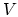 for each of the two circuits shown in the
figure below, using the line at the bottom as the reference (ground).

Solution: (a) 4.3V (b) 0.7V
- Problem 2. (40 points)
The circuit below shows a simple means for obtaining improved bias
stability of the DC operating point of the transistor. As always,
assume  when answering the following questions.
when answering the following questions.

- Explain qualitatively what happens if
 tends to rise as a
result of an increase in .
tends to rise as a
result of an increase in .
- Derive an expression for in terms of 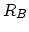 and 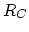 and
.
- Find an approximation of the expression of if is
large enough. To make independent of , how and
should be related?
- Find and so that the DC operating point is
 and
and  , when
, when  and
and  .
.
- Find 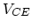 and for 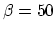, , and 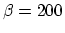
based on the resistances found above.
Solution:
-
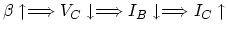
-
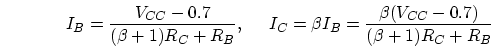
- If
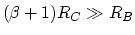, then
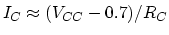,
independent of .
- ,
 ,
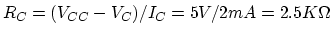,
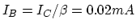,
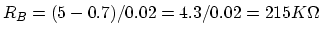.
,
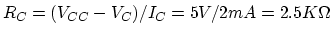,
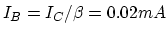,
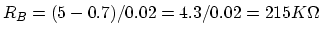.
- When :
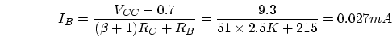
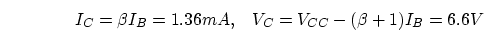
When :
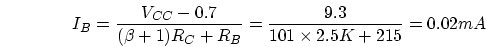
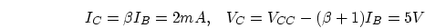
When :
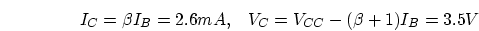
- Problem 3. (40 points)

The circuit shown below is a silicon transistor amplifier which takes one
input and generates two outputs. Assume  , 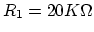,
, 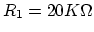,
 ,
,
 , .
, .
- Find
 , 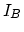, 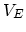 and 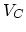, and the DC operating point in
terms of and .
, 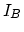, 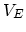 and 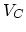, and the DC operating point in
terms of and .
- In the figure provided, draw the load line, indicate the DC operating
point, and find the corresponding and .
- If the input voltage is such that it produces an AC component of the
base current:
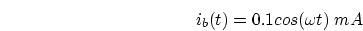
give the expression of the AC component of the two output voltages  at the emitter and 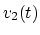 at the collector, and sketch their waveforms in
the SAME plot provided below, where
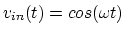 is also ploted.
(No need to be to the scale vertically, but do pay attention to the time
scale.)
at the emitter and 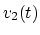 at the collector, and sketch their waveforms in
the SAME plot provided below, where
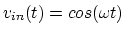 is also ploted.
(No need to be to the scale vertically, but do pay attention to the time
scale.)


Solution:
Apply Thevenin thm to base circuit to get
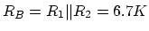, 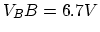.
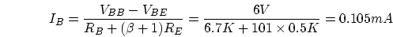
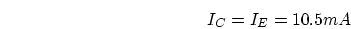
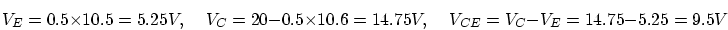
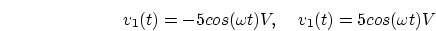
- Problem 4. (20 points)
- Find expression for the voltage
 across the load
across the load  in terms
of all parameters given in the circuit shown on the left of the figure
below.
in terms
of all parameters given in the circuit shown on the left of the figure
below.
- Find expression for the voltage
 across the load in terms
of all parameters given in the circuit shown on the right of the figure
below, in which a voltage-amplification circuit, a buffer, is inserted
between the source and the load, characterized by three parameters:
(a) the input resistance
across the load in terms
of all parameters given in the circuit shown on the right of the figure
below, in which a voltage-amplification circuit, a buffer, is inserted
between the source and the load, characterized by three parameters:
(a) the input resistance  , (b) the output resistance
, (b) the output resistance  ,
and (c) the over-circuit voltage gain
,
and (c) the over-circuit voltage gain  .
.
- Assuming
 ,
,
 ,
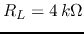,
,
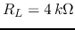,
 ,
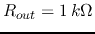, and
,
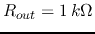, and  , find the
numerical value for and in the two cases above.
, find the
numerical value for and in the two cases above.
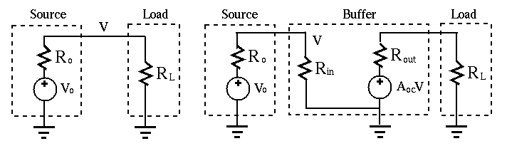
Solution: